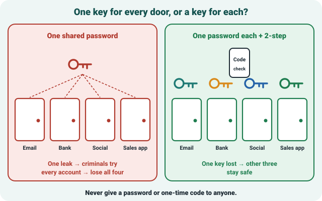

K10 · Digital skills, AI and workplace rules › Level 1 Exploring
Protect your passwords and personal information when you start work
1. Objectives
- Create long passwords, a different one for each account, and turn on two-step verification.
- Name 3 kinds of personal information you should not post or send to strangers, and say why.
2. Retrieval warm-up
- What are the three small roles in a group?
- What are the four steps for showing a newcomer a task?
Answers
- Timekeeper, note-taker, reminder.
- Say the purpose; show it, saying each step; they try; praise one point, fix one point.
Review: Take on a small role in a group.
3. Explanation
Almost every job uses technology now. Cashiers use tills. Tailors use programmed sewing machines. Delivery riders use an app to get orders. When you start work, you get more accounts: work email, team chat, sales software.
Each account is a door. If someone takes over your account, they can pretend to be you and take customer or company data.
Three habits to protect your accounts:
Three habits to protect your accounts
- Long passwords, a different one for each placeUse a long phrase only you can remember, instead of a short word.
- Turn on two-step verificationSigning in also needs a code sent to your phone or an authenticator app.
- Never give your password or one-time code to anyoneNot even to someone who says they are your manager, your bank or the police.
Why a different password for each place? If one website leaks its data, criminals try that password on your other accounts. One password everywhere means losing many accounts at once.

A one-time code (also called OTP, a one-time password) is the last key. Anyone who asks you for it is almost certainly a scammer.
Three kinds of personal information to keep private:
- Photos or numbers of your ID card. They can be used to open accounts or take out loans in your name.
- Passwords, one-time codes, photos of your bank card. They can be used to take your money.
- Your home address and daily movements. Strangers can learn where you live and when you are out.
When applying for jobs, send documents only to employers you have checked. An employer who asks by message for a photo of your ID plus a deposit is a warning sign.
4. Workplace example
Hypothetical scenario. Mia has just started a part-time job in a cosmetics shop. She is given an account for the sales software.
Mia does this:
- She changes the password she was given to a long phrase, and does not reuse her social media password.
- She turns on two-step verification for her personal email and her bank account.
- She does not stick the password on the till screen. At the end of each shift, she signs out.
A week later, a message from "software support" asks for her one-time code "for maintenance". Mia does not send it and tells her manager at once.
Why this works: Mia protects both her work account and her personal accounts. She spots the request for a one-time code and reports it to the right person.
5. Practice
Hypothetical scenario. You have just started at a café. The manager posts the till password in a group chat that includes some regular customers. A colleague suggests: "Let's use 123456, it's easy to remember."
Write 2 things you would suggest to the manager.
Hint 1
There are two problems: where the password was sent, and how strong it is.
Model answer
- "The group chat includes customers. Could we send the password to each staff member privately?"
- "I suggest changing to a longer password, because 123456 is very easy to guess."
6. Self-check
Choose an answer. Every option has an explanation.
Question 1. Why should you not use the same password for many accounts?
-
Not quite. One shared password is actually easier to remember. The problem is the risk.
-
Correct. Correct. With one shared password, you can lose many accounts at once.
-
Not quite. The reason here is safety, not a specific law.
Question 2. Someone calls, says they are from your bank, and asks for your one-time code to "unlock your account". What do you do?
-
Not quite. Scammers may know your name. Nobody has a genuine reason to ask for your one-time code.
-
Correct. Correct. Never give a one-time code to anyone, and contact the bank through its official channel.
-
Not quite. With the code, a criminal can move your money at once.
Question 3. An online employer asks for photos of both sides of your ID card and a deposit for a uniform. What do you think?
-
Not quite. Asking for ID and a deposit by message is a warning sign.
-
Correct. Correct. Send documents only to employers you have checked.
-
Not quite. ID photos can also be used to open accounts in your name.
Question 4. At the end of your shift at the till, what should you do with your sales software account?
-
Not quite. The next person would be working under your name. If something goes wrong, nobody can tell who did it.
-
Correct. Correct. Signing out means each person works only under their own account.
-
Not quite. A password on display lets anyone use your account.
7. Reflection
- How many accounts share the same password right now?
- Have you ever posted information online that you now want to delete?
8. Real-world application
Over the next 7 days, change the passwords of your 3 most important accounts: email, bank, social media. Give each one its own password. Turn on two-step verification for at least one account.
9. Metadata
| skill | K10 · Digital skills, AI and workplace rules |
|---|---|
| level | Level 1 · Exploring |
| group | N2 |
| framework_map | WEF: Technological literacy; CSfW: 3e Work in a digital world; SkillsFuture CCS: Digital Fluency; DigComp 3.0 (reference only) |
| original | Vietnamese version |
| updated | 2026-11-14 |
Finish the lesson
Mark it as done and the site suggests reviews after 1, 3 and 7 days. The data stays on your device only.
Suggested reviews: